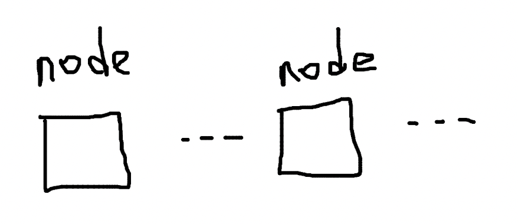

A Method for Blockchain Node Storage Expansion
Blockchain is inherently a system that supports horizontal scaling, with exceptional node expansion capabilities.
However, vertical scaling of blockchain remains a frequently discussed topic. A single node’s hard drive capacity is always limited. If a node holds all the data, the performance requirements for a single machine are quite high; if a node does not have complete data, it cannot be considered one of the P2P network nodes.
The most straightforward solution is to use a distributed database. Since the database itself supports scaling, the storage module of the blockchain node also supports scaling (assuming there is no conflict between the blockchain and the database in principle).
Here, we describe a simple conceptual implementation idea.
Vertical scaling of nodes aims to use multiple nodes working together to replace the position of an original node, with the entire cluster providing the same input and output as a single node.
Nodes can completely distribute block data across different sub-nodes, such as by using the classic database partitioning idea, modulo operation on block numbers, or random distribution.

Nodes can be divided into index nodes and storage nodes. Index nodes only record the relationship between block numbers and sub-nodes, with the sub-node cluster acting as the storage module of the index node. The index node is also responsible for sending and receiving blocks and other operations. Apart from the reduced access speed due to network latency, there seem to be no major issues.
Is it necessary to have more than one type of node? Is there a way to achieve all functions with just one set of source code, one binary program, and one type of node? Of course, this does not mean simply packaging three types of nodes together. Due to the different functional focuses and especially the different “identities” of nodes, nodes might have to be differentiated. Should a single node providing capabilities to the outside and a cluster of nodes providing capabilities to the outside have the same status within the cluster?
After dispersing block data, “world state” data can be entirely stored on the index nodes.
If state data also needs to be scaled, the index nodes can similarly retain only index data and distribute the state data across storage nodes.

Such a solution may be overly simplistic, but what if it works effectively?